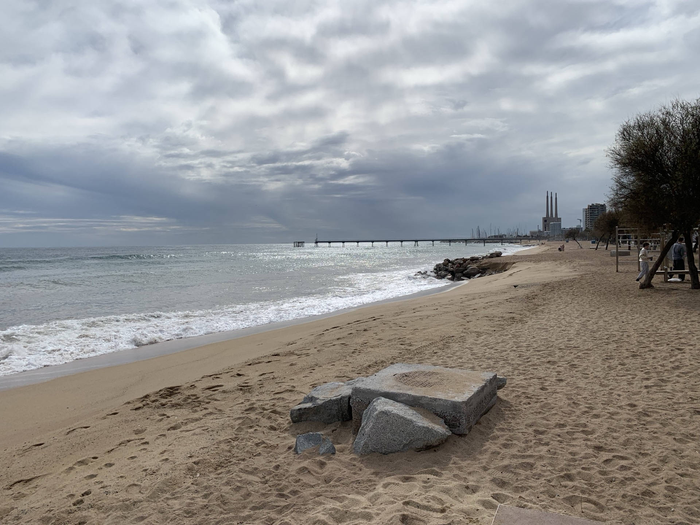
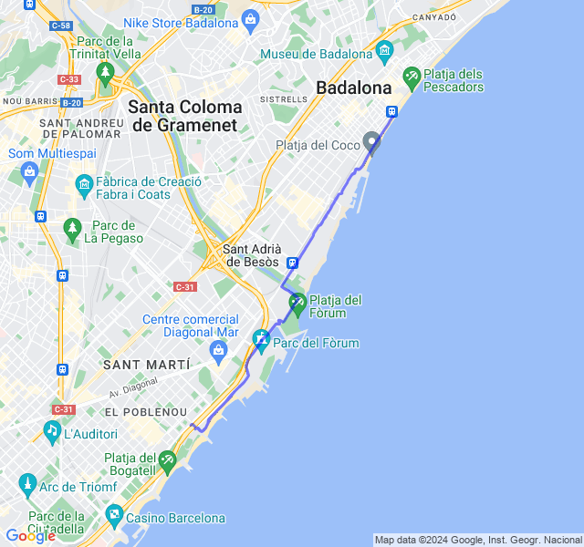
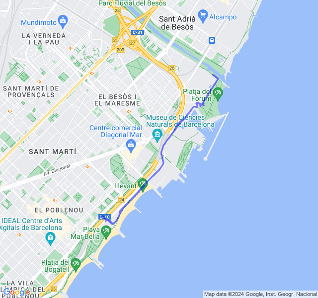
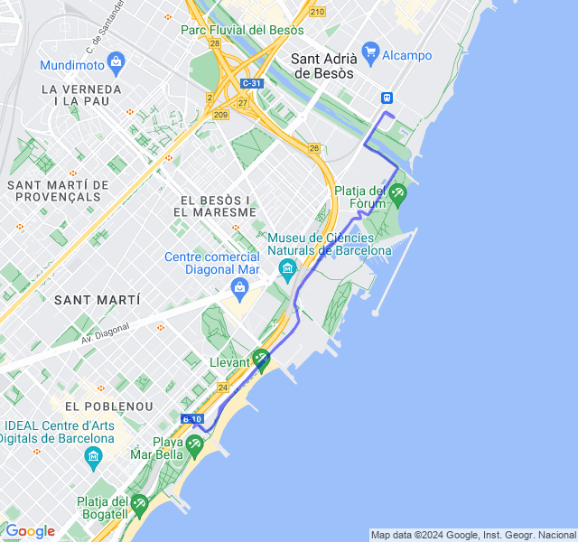
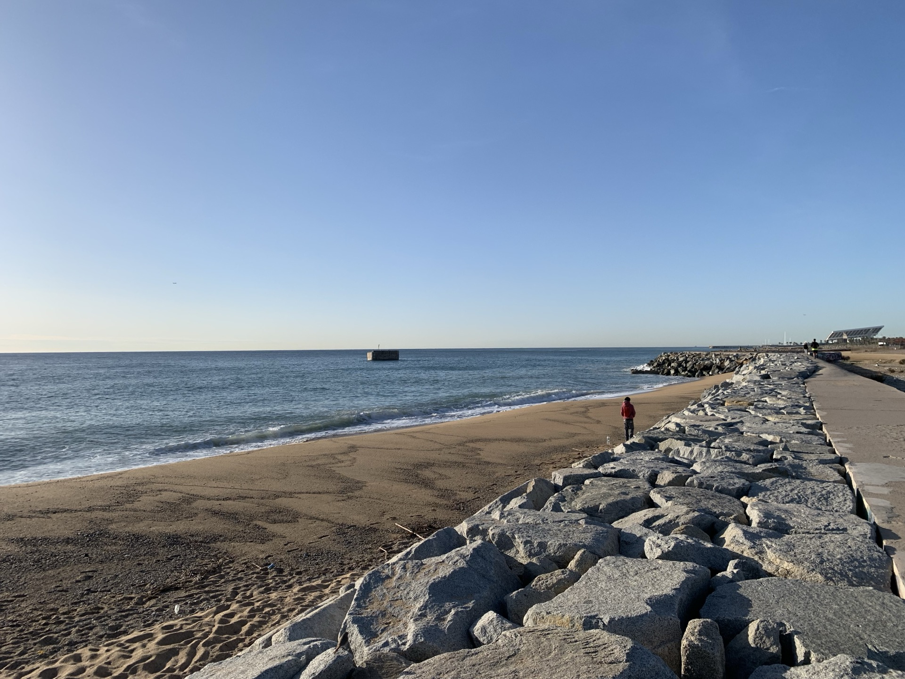
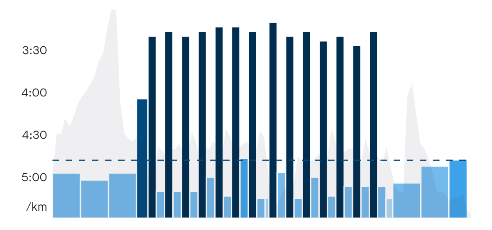
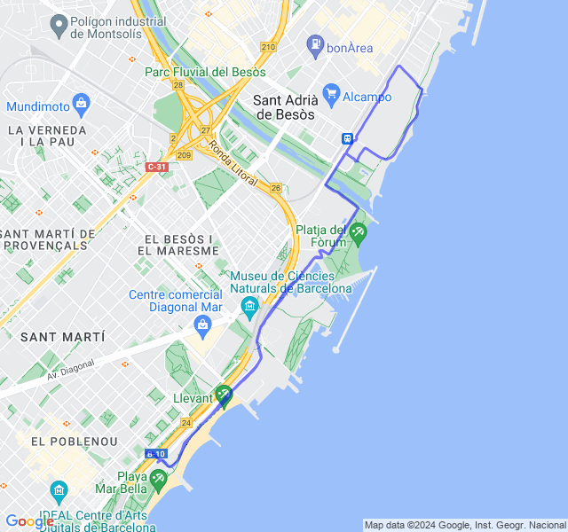
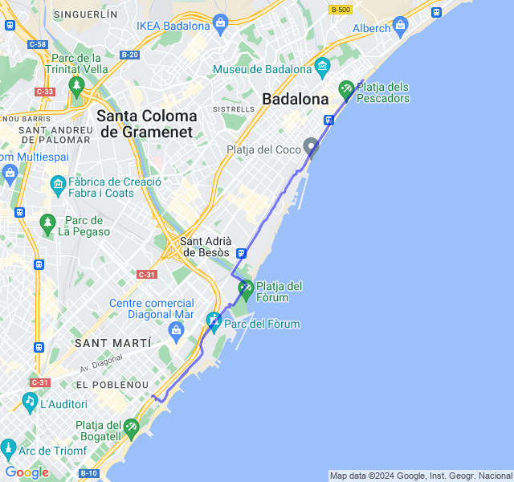

Settimana 9
| 1 min read
Settimana tranquilla ma un po' affaticata dopo il primo lunghissimo.
Prima uscita
14km Z1. Un po' affaticato. Devo un po' abituarmi alla nuova Z1 più bassa di qualche battito: oggi ho sforato parecchio.


Seconda uscita
2x7x300 Z5. È stato un allenamento abbastanza faticoso. Mi sembra andato abbastanza bene anche se la Z5 non l'ho mai presa purtroppo.

Terza uscita
8km corsa lenta post potenziamento. Tutto ok, un po' affaticato ma niente di preoccupante.

Quarta uscita

10km Z2. Tutto tranquillo. Con le nuove zone Z2 il passo è di conseguenza rallentato un po'.


Quinta uscita
8x1000 Z3. Pensavo fosse un allenamento più tranquillo e invece è stato faticoso. Ho cercato di tenere un buon ritmo anche nella parte di recupero.
